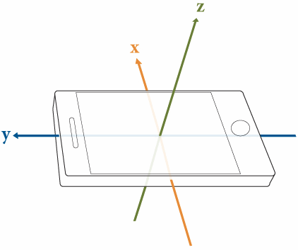

Motion: 10 second snapshot of accelerometer data from my iPhone 6
*Data extracted using Pythonista's motion module on iPhone 6
Explanation
I was curious if I could use my phone's sensor data to predict a concerted physical action like jumping or walking or sitting down. Here, the multi-series line chart using D3.js, given the time dimension, provides a view of the physical action.
Can you guess what my physical movement was from this chart?
[answer, you guessed it: jumping]
Try another movement:
Data comes from the phone's accelerometer in the X,Y, and Z planes:
*Photo credit: MathWorks
With streaming data, the multi-series line chart lends itself to encoding more interesting events, and in real time. Think about actions like tap dancing, parcour acrobatics, X-game events, stunt plane maneuvures, etc. What would they look like in a multi-series line chart?